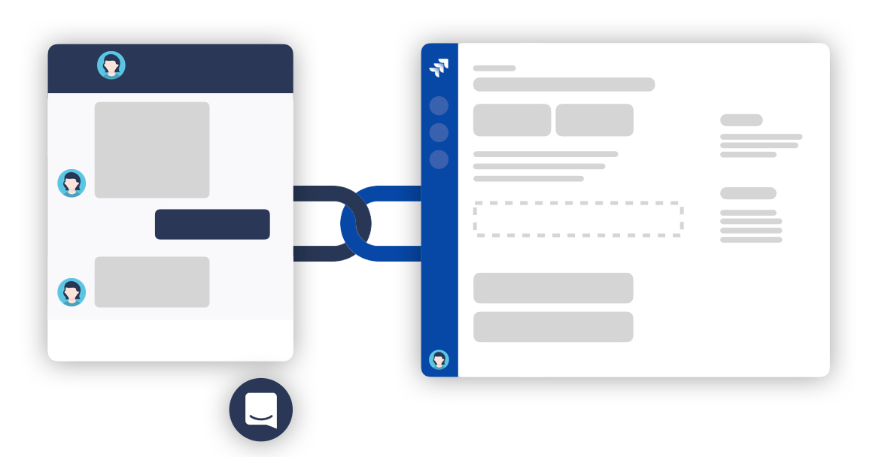

Conversation Linking

Intercom conversation linking allows your team to associate Intercom conversations with Jira issues. Linked conversations get updates from associated Jira issues posted as a Note.
This allows your team to easily stay on top of replying to all your customers impacted by a certain issue in a scalable way. Simply link all conversations to the respective issue. Additionally, linked issues can automatically be re-opened on updates. Initially, you link and close conversations. Once there is progress on the Jira ticket, linked conversations are automatically re-opened and show up at the top of your inbox.
If your Intercom team does not have access to Jira consider using Conversation Actions to give them a way to link or create Jira issues directly from Intercom.
[info] Prerequisites
- Active Intercom subscription or trial
This feature is only available if the Intercom App you are connected to has a trial or active subscription.
Notifications can be posted for the following Jira issue events:
- issue created
- issue assignee changed
- issue status changed
- issue commented
Which of these notifications should be posted and when conversations are re-opened is fully configurable. See here on how to tweak it.
Link Intercom Conversation to Jira Issue
A link between a Jira issue and an Intercom conversation can be established simply by pasting a conversation URL into the issue description or comments.
- Open the Intercom conversation you would like to link.
- Copy the URL from the browser's address bar.
- Open the Jira issue you would like to link or create a new one.
- Paste the URL into an issue comment, or add it to the issue description.
- Your conversation is now linked and you can find a Note with the issue reference posted to the Intercom conversation.
Unlink Intercom Conversation from Jira Issue
You can unlink an Intercom conversation by removing the conversation URL from the respective Jira issue comment or description. After that no more updates will we sent to that conversation.
Feature limitation
[info] Conversation linking is only available if the Intercom App you are connected to has a trial or active subscription.
This condition is imposed by the Intercom API and cannot be changed.
If you are solely using Intercom Platform (free), we recommended that you disable conversation linking all together. Follow the instructions on how to configure Conversation Linking.